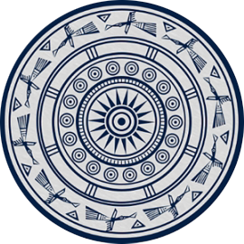
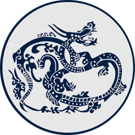
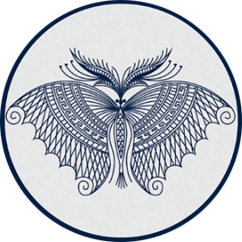

首页
蜡染简介
工艺流程
文创产品

这是贵州民间蜡染中最古老的纹样。铜鼓是一些少数民族极
为尊崇的重器，古时在祭祀、娱乐和征战中使用。对铜鼓的
尊重意味着对祖先的缅怀和崇拜。
鱼被作为纹样历史悠久，在出土的史前陶器、玉器中就出现了鱼纹。由于鱼产子多，其腹内多子，因此鱼纹的原始寓意便是象征生殖。

龙是中国的原始图腾。这种纹样在苗族刺绣中常见，在蜡染中也有表现。贵州少数民族地区的龙纹极有特色，其外形和内涵与汉族地区的龙纹截然不同。
龙是中国的原始图腾。这种纹样在苗族刺绣中常见，在蜡染中也有表现。贵州少数民族地区的龙纹极有特色，其外形和内涵与汉族地区的龙纹截然不同。

在苗族蜡染中，姿态各异的蝴蝶图案，是蜡染艺人们创作的永恒主题之一。而苗族人苗族对蝴蝶的崇拜，由来已久。我国古史传说认为，苗族的先祖可追溯到原始社会时期活跃于中原地区的“九黎”部落首领蚩尤。
花技艺,也是我国非物质文化遗产保护的对象.我们致力努力保护蜡染这一传统文化工艺的传承.
让世界看见中国的美
深入了解蜡染
发现更多美好
使用是最好的传承
有意见可以提出
皖ICP-1307327号 版权所有：浸染时光网 | 地址:安徽省合肥市蜀山区五里墩街道史河路八号